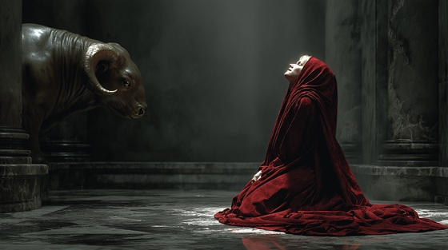

As punishment for King Minos's broken oath, Poseidon cursed Queen Pasiphaë with an unnatural passion for the sacred bull.
Through the craft of Daedalus, she was able to fulfill her cursed desire — and from this violation of nature, the Minotaur was born.
"The Curse of Flesh" captures Pasiphaë’s descent into madness, shame, and tragic inevitability — the living nightmare that the gods unleashed.
The Curse of Flesh
I wore the crown, I bore the gold
The queen of fire, the queen grown cold
But in my blood, a serpent crept—
A hunger sown, a vow unkept
No prayer will save, no hand will heal—
The cursed flesh the gods reveal
Curse of flesh, fire of bone
The blood betrays what heart has known
No sacred womb, no holy breath—
Only the birth of cursed death
The white bull calls, the hunger wakes
The mind is torn, the body breaks
Through hollow dreams and broken cries—
I crawl to where my honor dies
No gods will weep, no thrones forgive—
The beast within demands to live
Curse of flesh, fire of bone
The blood betrays what heart has known
No sacred womb, no holy breath—
Only the birth of cursed death
Daedalus builds, I wear the lie
A hollow skin beneath the sky
And through the dark, and through the flame—
The beast shall rise without a name
Burn the flesh, blind the soul
Tear the mind from broken whole
I loved, I wept, I could not flee—
The curse was carved inside of me
Curse of flesh, fire of bone
The gods will reap what kings have sown
No temple pure, no blood unstained—
The curse of flesh shall bear the bane
Blood shall howl, flesh shall scream—
The monster wakes from broken dream